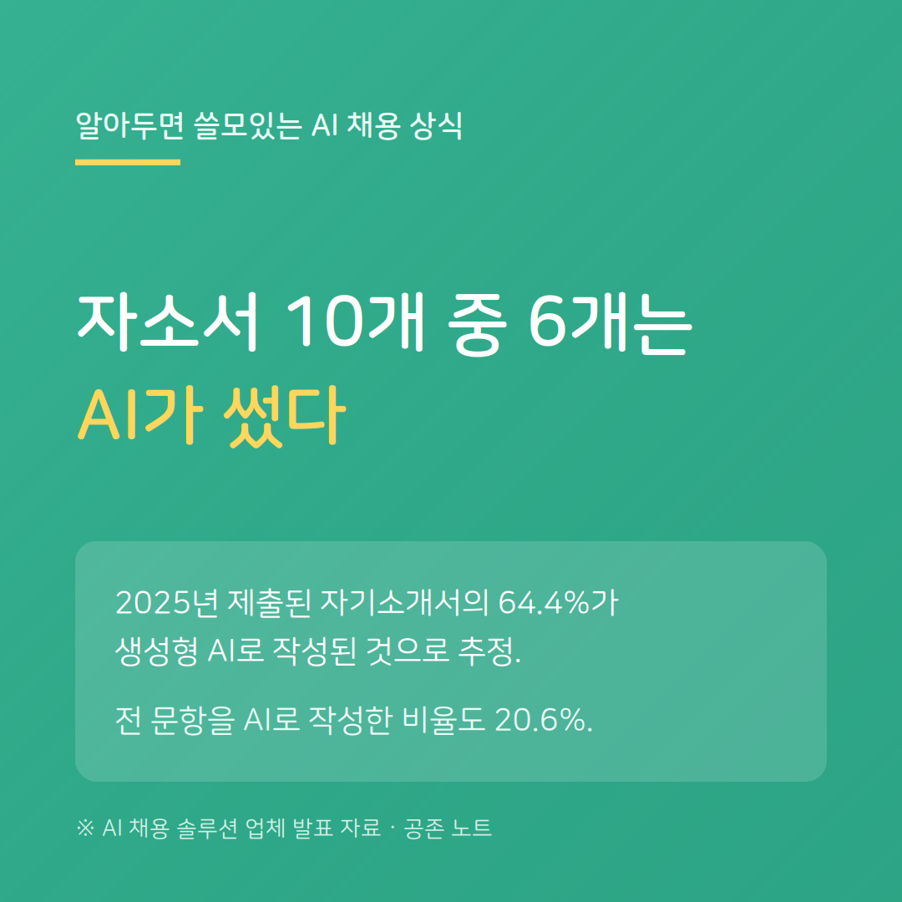

조금 아이러니한 상황입니다. 지원자는 AI로 자소서를 쓰고, 기업은 AI로 그 자소서가 AI로 쓰였는지를 확인합니다. 결국 AI가 쓴 글을 AI가 읽는 셈입니다.
한 리포트에 따르면 2025년 제출된 자소서의 64.4%가 생성형 AI로 작성된 것으로 추정되며, 전 문항을 AI로 작성한 비율도 20.6%에 달합니다. (AI 채용 솔루션 업체 발표 자료)
여기서 중요한 건 'AI 티를 안 내는 기술'이 아닙니다. 기업이 결국 확인하려는 것은 '이 경험이 진짜인가'입니다. AI가 만들어내기 어려운 구체적인 경험과 디테일이 결국 변별점이 됩니다.
AI를 활용하더라도 초안까지만 두고, 나만의 경험은 직접 채우는 것이 안전합니다.
---
※ 인용 수치는 AI 채용 솔루션 업체가 발표한 리포트에 근거한 추정치입니다.
공존 노트 · AI가 당신을 평가하는 시대, 구직자를 위한 안내서